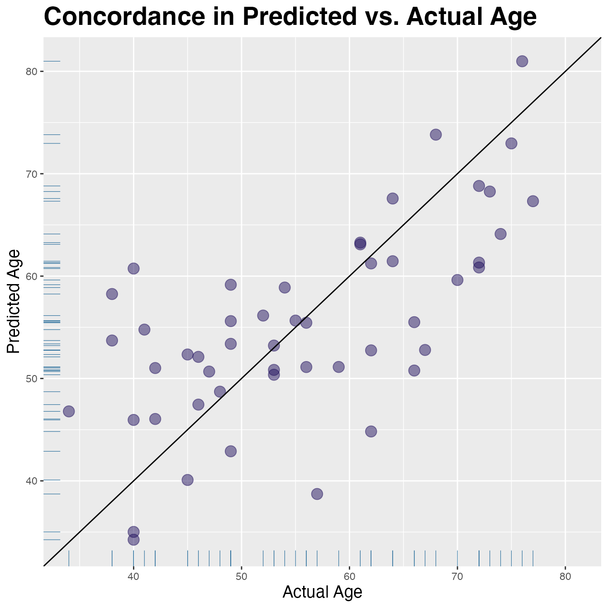

Linear Regression
Stu Field, SomaLogic Operating Co., Inc.
Source:vignettes/articles/stat-linear-regression.Rmd
stat-linear-regression.RmdRegression of Continuous Variables
Although targeted statistical analyses are beyond the scope of the
SomaDataIO package, below is an example analysis that
typical users/customers would perform on ‘SomaScan’ data.
It is not intended to be a definitive guide in statistical analysis
and existing packages do exist in the R ecosystem that
perform parts or extensions of these techniques. Many variations of the
workflow below exist, however the framework highlights how one could
perform standard preliminary analyses on ‘SomaScan’ data.
Data Preparation
# the `example_data` package data
dim(example_data)
#> [1] 192 5318
table(example_data$SampleType)
#>
#> Buffer Calibrator QC Sample
#> 6 10 6 170
# center/scale
cs <- function(.x) { # .x = numeric vector
out <- .x - mean(.x) # center
out / sd(out) # scale
}
# prepare data set for analysis
cleanData <- example_data |>
filter(SampleType == "Sample") |> # rm control samples
drop_na(Age) |> # rm NAs if present
log10() |> # log10-transform (Math Generic)
modify_at(getAnalytes(example_data), cs) # center/scale analytes
summary(cleanData$Age)
#> Min. 1st Qu. Median Mean 3rd Qu. Max.
#> 18.00 46.00 55.00 55.66 67.00 77.00Linear Regression
We use the cleanData, train, and
test data objects from above.
Predict Age
LinR_tbl <- getAnalyteInfo(train) |> # `train` from above
select(AptName, SeqId, Target = TargetFullName, EntrezGeneSymbol, UniProt) |>
mutate(
formula = map(AptName, ~ as.formula(paste("Age ~", .x, collapse = " + "))),
model = map(formula, ~ stats::lm(.x, data = train, model = FALSE)), # fit models
slope = map(model, coef) |> map_dbl(2L), # pull out B_1
p.value = map2_dbl(model, AptName, ~ {
summary(.x)$coefficients[.y, "Pr(>|t|)"] }), # pull out p-values
fdr = p.adjust(p.value, method = "BH") # FDR for multiple testing
) |>
arrange(p.value) |> # re-order by `p-value`
mutate(rank = row_number()) # add numeric ranks
LinR_tbl
#> # A tibble: 5,284 × 11
#> AptName SeqId Target EntrezGeneSymbol UniProt formula model slope
#> <chr> <chr> <chr> <chr> <chr> <list> <lis> <dbl>
#> 1 seq.3045.72 3045… Pleio… PTN P21246 <formula> <lm> 6.70
#> 2 seq.4496.60 4496… Macro… MMP12 P39900 <formula> <lm> 6.31
#> 3 seq.15640.… 1564… Trans… TAGLN Q01995 <formula> <lm> 6.74
#> 4 seq.6392.7 6392… WNT1-… WISP2 O76076 <formula> <lm> 6.32
#> 5 seq.15386.7 1538… Fatty… FABP4 P15090 <formula> <lm> 5.87
#> 6 seq.4374.45 4374… Growt… GDF15 Q99988 <formula> <lm> 5.95
#> 7 seq.2609.59 2609… Cysta… CST3 P01034 <formula> <lm> 5.60
#> 8 seq.8480.29 8480… EGF-c… EFEMP1 Q12805 <formula> <lm> 6.00
#> 9 seq.15533.… 1553… Macro… MSR1 P21757 <formula> <lm> 5.51
#> 10 seq.3362.61 3362… Chord… CHRDL1 Q9BU40 <formula> <lm> 5.35
#> # ℹ 5,274 more rows
#> # ℹ 3 more variables: p.value <dbl>, fdr <dbl>, rank <int>Fit Model | Calculate Performance
Fit an 8-marker model with the top 8 features from
LinR_tbl:
feats <- head(LinR_tbl$AptName, 8L)
form <- as.formula(paste("Age ~", paste(feats, collapse = "+")))
fit <- stats::lm(form, data = train, model = FALSE)
n <- nrow(test)
p <- length(feats)
# Results
res <- tibble(
true_age = test$Age,
pred_age = predict(fit, newdata = test),
pred_error = pred_age - true_age
)
# Lin's Concordance Correl. Coef.
# Accounts for location + scale shifts
linCCC <- function(x, y) {
stopifnot(length(x) == length(y))
a <- 2 * cor(x, y) * sd(x) * sd(y)
b <- var(x) + var(y) + (mean(x) - mean(y))^2
a / b
}
# Regression metrics
tibble(
rss = sum(res$pred_error^2), # residual sum of squares
tss = sum((test$Age - mean(test$Age))^2), # total sum of squares
rsq = 1 - (rss / tss), # R-squared
rsqadj = max(0, 1 - (1 - rsq) * (n - 1) / (n - p - 1)), # Adjusted R-squared
R2 = stats::cor(res$true_age, res$pred_age)^2, # R-squared Pearson approx.
MAE = mean(abs(res$pred_error)), # Mean Absolute Error
RMSE = sqrt(mean(res$pred_error^2)), # Root Mean Squared Error
CCC = linCCC(res$true_age, res$pred_age) # Lin's CCC
)
#> # A tibble: 1 × 8
#> rss tss rsq rsqadj R2 MAE RMSE CCC
#> <dbl> <dbl> <dbl> <dbl> <dbl> <dbl> <dbl> <dbl>
#> 1 4152. 8492. 0.511 0.416 0.550 7.16 9.11 0.702Visualize Concordance
lims <- range(res$true_age, res$pred_age)
res |>
ggplot(aes(x = true_age, y = pred_age)) +
geom_point(colour = "#24135F", alpha = 0.5, size = 4) +
expand_limits(x = lims, y = lims) + # make square
geom_abline(slope = 1, colour = "black") + # add unit line
geom_rug(colour = "#286d9b", linewidth = 0.2) +
labs(y = "Predicted Age", x = "Actual Age") +
ggtitle("Concordance in Predicted vs. Actual Age") +
theme(plot.title = element_text(size = 21, face = "bold"),
axis.title.x = element_text(size = 14),
axis.title.y = element_text(size = 14))